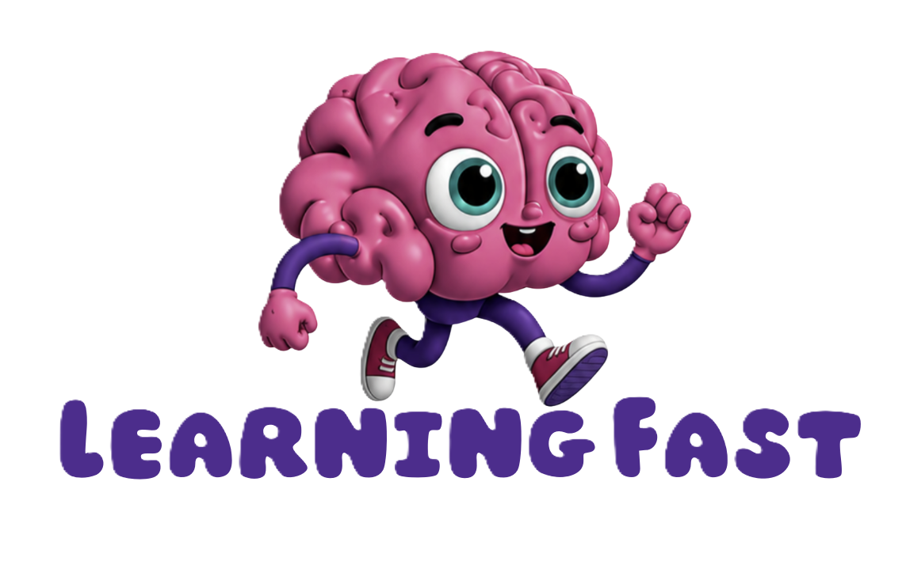

<!DOCTYPE html>
<html lang="el">
<head>
<!-- Google tag (gtag.js) -->
<script async src="https://www.googletagmanager.com/gtag/js?id=G-YQLWWHJHXY"></script>
<script>
  window.dataLayer = window.dataLayer || [];
  function gtag(){dataLayer.push(arguments);}
  gtag('js', new Date());

  gtag('config', 'G-YQLWWHJHXY');
</script>
<meta charset="utf-8">
<meta name="viewport" content="width=device-width, initial-scale=1, viewport-fit=cover">
<meta name="description" content="Χρόνοι ρημάτων: δωρεάν εκπαιδευτικό παιχνίδι για τους χρόνους των ρημάτων για παιδιά δημοτικού.">
<title>Χρόνοι ρημάτων</title>
<link rel="preconnect" href="https://fonts.googleapis.com">
<link rel="stylesheet" href="https://fonts.googleapis.com/css2?family=Comfortaa:wght@500;700&family=Didact+Gothic&display=swap">
<style>
/* Layout: a "time machine" with 4 stations (levels) on a track; each station opens activity cards; play screens are one focused column. */
:root{
  --bg:#F2F4FA; --surface:#FFFFFF; --sunk:#E7EBF5; --ink:#1C2142; --muted:#5A6187; --line:#D8DDEC;
  --accent:#3D4FD1; --accent-ink:#FFFFFF;
  --ok:#1F8A5B; --ok-bg:#E3F4EC; --bad:#C8403A; --bad-bg:#FBE7E5; --star:#E2A019;
  --t-pres:#239163; --t-impf:#2F74C0; --t-aor:#5A4FCF; --t-futC:#C9700C; --t-futS:#CC4434; --t-perf:#AE3A8A; --t-plu:#6D5A46; --t-futP:#957506;
  --f-display:"Comfortaa","Trebuchet MS",system-ui,sans-serif;
  --f-body:"Didact Gothic","Segoe UI",system-ui,sans-serif;
  --r:14px;
}
@media (prefers-color-scheme: dark){:root:not([data-theme="light"]){
  --bg:#12172B; --surface:#1C2340; --sunk:#252D4F; --ink:#EDF0FB; --muted:#A2AACB; --line:#313A5E;
  --accent:#8A97FF; --accent-ink:#12172B;
  --ok:#4CC98F; --ok-bg:#173A2C; --bad:#FF7A70; --bad-bg:#44201F; --star:#F5C04A;
  --t-pres:#4CC48E; --t-impf:#63A4EE; --t-aor:#9489F5; --t-futC:#F2A447; --t-futS:#F2786A; --t-perf:#E072BD; --t-plu:#BFA48B; --t-futP:#E1C14A;
  color-scheme:dark;
}}
:root[data-theme="dark"]{
  --bg:#12172B; --surface:#1C2340; --sunk:#252D4F; --ink:#EDF0FB; --muted:#A2AACB; --line:#313A5E;
  --accent:#8A97FF; --accent-ink:#12172B;
  --ok:#4CC98F; --ok-bg:#173A2C; --bad:#FF7A70; --bad-bg:#44201F; --star:#F5C04A;
  --t-pres:#4CC48E; --t-impf:#63A4EE; --t-aor:#9489F5; --t-futC:#F2A447; --t-futS:#F2786A; --t-perf:#E072BD; --t-plu:#BFA48B; --t-futP:#E1C14A;
  color-scheme:dark;
}
*{box-sizing:border-box}
body{background:var(--bg);color:var(--ink);font-family:var(--f-body);font-size:17px;line-height:1.55}
.wrap{max-width:980px;margin:0 auto;padding-inline:16px;padding-block:20px 48px}
h1,h2,h3{font-family:var(--f-display);font-weight:700;text-wrap:balance;margin:0;line-height:1.2}
h1{font-size:clamp(1.6rem,4.5vw,2.4rem)}
h2{font-size:1.35rem}
h3{font-size:1.1rem}
p{margin:0}
button{font:inherit;color:inherit;cursor:pointer}
button:focus-visible,.chip:focus-visible{outline:3px solid var(--accent);outline-offset:2px}
.muted{color:var(--muted)}
.stack{display:flex;flex-direction:column;gap:16px}

/* header */
.top{display:flex;flex-wrap:wrap;gap:12px 20px;align-items:flex-end;justify-content:space-between;margin-bottom:20px}
.top .lead{max-width:52ch;color:var(--muted);margin-top:6px}
.tools{display:flex;gap:8px;flex-wrap:wrap}
.ghost{background:var(--surface);border:1px solid var(--line);border-radius:999px;padding:6px 14px;font-size:.9rem}

/* time ribbon in header */
.ribbon{display:grid;grid-template-columns:auto 1fr auto 1fr auto;align-items:center;gap:10px;margin:4px 0 22px;font-family:var(--f-display);font-size:.85rem;color:var(--muted)}
.ribbon .line{height:4px;border-radius:4px;background:linear-gradient(90deg,var(--t-aor),var(--t-impf),var(--t-pres))}
.ribbon .line.future{background:linear-gradient(90deg,var(--t-pres),var(--t-futC),var(--t-futS))}
.ribbon .now{background:var(--t-pres);color:var(--accent-ink);padding:2px 10px;border-radius:999px;font-weight:700;color:var(--surface)}

/* stations */
.stations{display:grid;grid-template-columns:repeat(auto-fit,minmax(200px,1fr));gap:12px}
.station{position:relative;text-align:left;background:var(--surface);border:2px solid var(--line);border-radius:var(--r);padding:14px;display:flex;flex-direction:column;gap:8px;transition:border-color .15s,transform .15s}
.station:hover:not(:disabled){transform:translateY(-2px)}
.station[aria-pressed="true"]{border-color:var(--accent)}
.station:disabled{opacity:.55;cursor:not-allowed}
.station .num{font-family:var(--f-display);font-size:.8rem;letter-spacing:.04em;color:var(--muted)}
.station .stars{font-size:.85rem;color:var(--muted);font-variant-numeric:tabular-nums}
.dots{display:flex;flex-wrap:wrap;gap:5px}
.dot{width:12px;height:12px;border-radius:50%;background:var(--tc)}
.station .go{font-family:var(--f-display);font-weight:700;color:var(--accent);font-size:.9rem}
.station:hover:not(:disabled){border-color:var(--accent)}
.lock{position:absolute;top:12px;right:12px;font-size:.8rem;color:var(--muted)}

/* tense chip */
.tchip{display:inline-flex;align-items:center;gap:6px;padding:3px 10px;border-radius:999px;font-family:var(--f-display);font-weight:700;font-size:.82rem;color:var(--tc);background:color-mix(in srgb,var(--tc) 14%,var(--surface))}
.tchip::before{content:"";width:8px;height:8px;border-radius:50%;background:var(--tc)}
.new{font-size:.7rem;font-family:var(--f-display);font-weight:700;letter-spacing:.05em;background:var(--star);color:#2A1F00;padding:2px 8px;border-radius:999px}

/* activities */
.section-head{display:flex;flex-wrap:wrap;align-items:baseline;justify-content:space-between;gap:8px;margin:28px 0 12px}
.acts{display:grid;grid-template-columns:repeat(auto-fit,minmax(210px,1fr));gap:12px}
.act{text-align:left;background:var(--surface);border:1px solid var(--line);border-radius:var(--r);padding:16px;display:flex;flex-direction:column;gap:8px;min-width:0}
.act:hover{border-color:var(--accent)}
.act .st{color:var(--star);letter-spacing:2px;font-size:1.05rem}
.act .st .off{color:var(--line)}

/* learn */
.timeline{background:var(--surface);border:1px solid var(--line);border-radius:var(--r);padding:16px;overflow-x:auto}
.tl{display:grid;grid-template-columns:repeat(3,minmax(170px,1fr));gap:10px;min-width:540px}
.zone{border-radius:10px;background:var(--sunk);padding:10px;display:flex;flex-direction:column;gap:8px;align-items:flex-start}
.zone h3{font-size:.95rem;color:var(--muted)}
.tchip.dim{opacity:.35}
.cards{display:grid;grid-template-columns:repeat(auto-fill,minmax(280px,1fr));gap:14px}
.tcard{background:var(--surface);border:1px solid var(--line);border-top:5px solid var(--tc);border-radius:var(--r);padding:16px;display:flex;flex-direction:column;gap:10px;min-width:0}
.tcard h3{color:var(--tc);display:flex;gap:8px;align-items:center;flex-wrap:wrap}
.kw{display:flex;flex-wrap:wrap;gap:6px}
.kw span{background:var(--sunk);border-radius:8px;padding:2px 8px;font-size:.88rem}
.how{font-size:.92rem;color:var(--muted)}
table.conj{width:100%;border-collapse:collapse;font-size:.95rem}
table.conj td{padding:3px 0;border-bottom:1px dashed var(--line)}
table.conj td:first-child{color:var(--muted);width:42%}
table.conj td:last-child{font-weight:600}
.verbpick{display:flex;flex-wrap:wrap;gap:6px}
.seg{display:flex;flex-wrap:wrap;align-items:center;gap:6px;margin:0 0 12px}
.seg-label{font-family:var(--f-display);font-weight:700;font-size:.9rem;color:var(--muted);margin-right:4px}
.seg button{border:1px solid var(--line);background:var(--surface);border-radius:999px;padding:6px 14px;font-size:.92rem}
.seg button[aria-pressed="true"]{background:var(--accent);color:var(--accent-ink);border-color:var(--accent)}
.vgroup{font-family:var(--f-display);font-size:.8rem;color:var(--muted);margin:10px 0 6px}
.vnote{background:var(--sunk);border-left:4px solid var(--accent);border-radius:10px;padding:10px 14px;font-size:.95rem}
.verbpick button{border:1px solid var(--line);background:var(--surface);border-radius:999px;padding:4px 12px;font-size:.92rem}
.verbpick button[aria-pressed="true"]{background:var(--accent);color:var(--accent-ink);border-color:var(--accent)}

/* play */
.play{max-width:720px;margin:0 auto}
.bar{display:flex;align-items:center;gap:12px;margin-bottom:18px}
.back{background:none;border:none;color:var(--muted);padding:4px 0;font-size:.95rem}
.prog{flex:1;height:10px;background:var(--sunk);border-radius:999px;overflow:hidden}
.prog i{display:block;height:100%;background:var(--accent);border-radius:999px;transition:width .3s}
.count{font-variant-numeric:tabular-nums;color:var(--muted);font-size:.9rem}
.qcard{background:var(--surface);border:1px solid var(--line);border-radius:18px;padding:22px;display:flex;flex-direction:column;gap:18px}
.prompt{font-family:var(--f-display);font-size:.9rem;color:var(--muted)}
.sentence{font-size:clamp(1.25rem,3.6vw,1.6rem);line-height:1.5}
.help .cue{font-weight:700;text-decoration:underline;text-decoration-color:var(--star);text-decoration-thickness:3px;text-underline-offset:4px;text-decoration-skip-ink:none}
.qhead{display:flex;align-items:center;justify-content:space-between;gap:12px;flex-wrap:wrap}
.helpbtn.on{background:var(--surface);border-color:var(--line);color:var(--muted)}
.helpbtn{background:color-mix(in srgb,var(--star) 18%,var(--surface));border:2px solid var(--star);color:var(--ink);border-radius:999px;padding:6px 16px;font-family:var(--f-display);font-weight:700;font-size:.95rem}
.helpbox{background:var(--sunk);border-left:4px solid var(--star);border-radius:10px;padding:10px 14px;font-size:.95rem}
.basket .bex{font-size:.82rem;color:var(--muted)}
.verb{background:color-mix(in srgb,var(--accent) 16%,var(--surface));color:var(--accent);padding:0 6px;border-radius:6px;font-weight:700}
.blank{display:inline-block;min-width:4.5em;border-bottom:3px solid var(--accent);text-align:center;color:var(--accent);font-weight:700}
.hint{font-size:.95rem;color:var(--muted)}
.opts{display:grid;grid-template-columns:repeat(auto-fit,minmax(180px,1fr));gap:10px}
.opt{background:var(--surface);border:2px solid var(--line);border-radius:12px;padding:12px 14px;font-size:1.08rem;text-align:left;min-height:52px}
.opt:hover:not(:disabled){border-color:var(--accent)}
.opt.tense{border-color:color-mix(in srgb,var(--tc) 45%,var(--line));color:var(--tc);font-family:var(--f-display);font-weight:700;font-size:1rem}
.opt.right{border-color:var(--ok);background:var(--ok-bg);color:var(--ok)}
.opt.wrong{border-color:var(--bad);background:var(--bad-bg);color:var(--bad)}
.opt:disabled{cursor:default}
.fb{border-radius:12px;padding:12px 14px;font-size:1rem}
.fb.ok{background:var(--ok-bg);color:var(--ok)}
.fb.no{background:var(--bad-bg);color:var(--bad)}
.fb b{font-family:var(--f-display)}
.next{align-self:flex-end;background:var(--accent);color:var(--accent-ink);border:none;border-radius:12px;padding:12px 22px;font-family:var(--f-display);font-weight:700;font-size:1rem}
.transform{display:flex;flex-wrap:wrap;align-items:center;gap:10px}
.arrow{font-size:1.4rem;color:var(--muted)}

/* sort */
.pool{display:flex;flex-wrap:wrap;gap:8px;min-height:48px;padding:10px;border:2px dashed var(--line);border-radius:12px}
.chip{background:var(--surface);border:2px solid var(--line);border-radius:10px;padding:8px 12px;font-size:1.05rem}
.chip[aria-pressed="true"]{border-color:var(--accent);background:color-mix(in srgb,var(--accent) 14%,var(--surface))}
.chip.placed{border-color:transparent;background:color-mix(in srgb,var(--tc) 16%,var(--surface));color:var(--tc);font-size:.95rem;padding:4px 10px;cursor:default}
.baskets{display:grid;grid-template-columns:repeat(auto-fit,minmax(150px,1fr));gap:10px}
.basket{text-align:left;background:var(--sunk);border:2px solid transparent;border-radius:12px;padding:10px;display:flex;flex-direction:column;gap:6px;min-height:96px;align-items:flex-start}
.basket .bt{font-family:var(--f-display);font-weight:700;color:var(--tc);font-size:.92rem}
.basket.armed{border-color:color-mix(in srgb,var(--tc) 50%,transparent)}
.shake{animation:shake .35s}
@keyframes shake{20%,60%{transform:translateX(-6px)}40%,80%{transform:translateX(6px)}}

/* result */
.result{text-align:center;align-items:center}
.bigstars{font-size:3rem;letter-spacing:8px;color:var(--star)}
.bigstars .off{color:var(--line)}
.row{display:flex;gap:10px;flex-wrap:wrap;justify-content:center}
.unlocked{background:var(--ok-bg);color:var(--ok);border-radius:12px;padding:10px 14px;font-family:var(--f-display)}
.btn2{background:var(--surface);border:2px solid var(--line);border-radius:12px;padding:12px 20px;font-family:var(--f-display);font-weight:700}

.brand{display:flex;align-items:center;justify-content:space-between;gap:12px;margin-bottom:14px}
.brand-logo{height:52px;width:auto;display:block}
/* Το λογότυπο έχει σκούρα μωβ γράμματα -- σε σκοτεινό θέμα χρειάζεται ανοιχτό φόντο. */
@media (prefers-color-scheme: dark){:root:not([data-theme="light"]) .brand-logo{background:#F2F4FA;border-radius:10px;padding:4px 8px}}
:root[data-theme="dark"] .brand-logo{background:#F2F4FA;border-radius:10px;padding:4px 8px}
a.ghost{color:var(--ink);text-decoration:none;font-family:var(--f-display);font-weight:700}
a.ghost:hover{border-color:var(--accent)}
a.ghost:focus-visible{outline:3px solid var(--accent);outline-offset:2px}
.copyright{margin-top:28px;text-align:center;color:var(--muted);font-size:.85rem}
footer{margin-top:36px;display:flex;flex-wrap:wrap;gap:12px;align-items:center;justify-content:space-between;color:var(--muted);font-size:.9rem}
footer label{display:flex;gap:8px;align-items:center}
@media (prefers-reduced-motion: reduce){*{transition:none!important;animation:none!important}}
</style>
</head>
<body>
<div class="wrap" lang="el" id="app"></div>

<script>
/* ---------- Δεδομένα ---------- */
const ORDER=["pres","impf","aor","futC","futS","perf","plu","futP"];
const T={
 pres:{name:"Ενεστώτας",sphere:"Παρόν",when:"Κάτι γίνεται τώρα ή γίνεται συνέχεια, π.χ. κάθε μέρα.",keys:["τώρα","κάθε μέρα","συνήθως","αυτή τη στιγμή"],how:"Θέμα ενεστώτα + -ω, -εις, -ει, -ουμε, -ετε, -ουν",cues:["Τώρα,","Αυτή τη στιγμή,","Τώρα, κάθε μέρα,","Τώρα που μιλάμε,","Αυτήν ακριβώς τη στιγμή,"]},
 impf:{name:"Παρατατικός",sphere:"Παρελθόν",when:"Κάτι γινόταν στο παρελθόν για πολλή ώρα ή γινόταν πολλές φορές.",keys:["παλιά","πέρσι κάθε μέρα","κάθε απόγευμα","κάθε Σάββατο"],how:"(έ-) + θέμα ενεστώτα + -α, -ες, -ε, -αμε, -ατε, -αν",cues:["Πέρσι, κάθε απόγευμα,","Παλιά, κάθε Σάββατο,","Πέρσι το καλοκαίρι στο χωριό, κάθε πρωί,","Τα παλιά χρόνια, κάθε βράδυ,","Τον περασμένο μήνα, κάθε μέρα,","Πέρσι, κάθε Κυριακή,"]},
 aor:{name:"Αόριστος",sphere:"Παρελθόν",when:"Κάτι έγινε μία φορά στο παρελθόν και τελείωσε.",keys:["χθες","πριν από λίγο","την περασμένη Κυριακή","προχθές"],how:"(έ-) + θέμα αορίστου (συχνά με -σ-, -ψ-, -ξ-) + -α, -ες, -ε, -αμε, -ατε, -αν",cues:["Χθες το πρωί,","Την περασμένη Κυριακή,","Πριν από μία ώρα,","Χθες το βράδυ,","Την περασμένη εβδομάδα,","Προχθές το απόγευμα,"]},
 futC:{name:"Εξακολουθητικός Μέλλοντας",sphere:"Μέλλον",when:"Κάτι θα γίνεται στο μέλλον συνέχεια ή πολλές φορές.",keys:["από αύριο κάθε μέρα","του χρόνου κάθε Σάββατο","συνέχεια"],how:"θα + ενεστώτας (θα γράφω)",cues:["Από αύριο, κάθε μέρα,","Του χρόνου, κάθε Σάββατο,","Στις επόμενες διακοπές, κάθε πρωί,","Από τη Δευτέρα, κάθε πρωί,","Από τον άλλο μήνα, κάθε απόγευμα,","Το επόμενο καλοκαίρι, κάθε μέρα,"]},
 futS:{name:"Στιγμιαίος Μέλλοντας",sphere:"Μέλλον",when:"Κάτι θα γίνει μία φορά στο μέλλον.",keys:["αύριο","σε λίγο","την άλλη εβδομάδα"],how:"θα + θέμα αορίστου + -ω, -εις, -ει, -ουμε, -ετε, -ουν (θα γράψω)",cues:["Αύριο το πρωί,","Την άλλη εβδομάδα,","Σε λίγο,","Αύριο το απόγευμα,","Την άλλη Κυριακή,","Μεθαύριο,"]},
 perf:{name:"Παρακείμενος",sphere:"Παρόν",when:"Κάτι έχει γίνει και έχει τελειώσει μέχρι τώρα. Το αποτέλεσμα φαίνεται τώρα.",keys:["ήδη","μέχρι τώρα","ως τώρα"],how:"έχω, έχεις, έχει… + απαρέμφατο (έχω γράψει)",cues:["Μέχρι τώρα,","Ως αυτή τη στιγμή,","Μέχρι στιγμής,"]},
 plu:{name:"Υπερσυντέλικος",sphere:"Παρελθόν",when:"Κάτι είχε γίνει και είχε τελειώσει πριν από κάτι άλλο στο παρελθόν.",keys:["όταν ήρθε… είχε ήδη","χθες ως τις έξι"],how:"είχα, είχες, είχε… + απαρέμφατο (είχα γράψει)",cues:["Όταν ήρθε η μαμά,","Χθες, ως τις έξι,","Όταν χτύπησε το κουδούνι,","Όταν τελείωσε το μάθημα,","Όταν έφτασε το λεωφορείο,"]},
 futP:{name:"Συντελεσμένος Μέλλοντας",sphere:"Μέλλον",when:"Κάτι θα έχει γίνει και θα έχει τελειώσει πριν από μια στιγμή στο μέλλον.",keys:["ως το βράδυ","μέχρι την Κυριακή","αύριο ως τις έξι"],how:"θα έχω, θα έχεις… + απαρέμφατο (θα έχω γράψει)",cues:["Ως το βράδυ,","Μέχρι την Κυριακή,","Αύριο, ως τις έξι,","Μέχρι το απόγευμα,","Ως την Παρασκευή,"]}
};
/* Χρόνοι που είναι σίγουρα λάθος με τις λέξεις-κλειδιά κάθε χρόνου (για τις λάθος επιλογές).
   Ένας χρόνος που ταιριάζει ΚΑΙ αυτός με τη λέξη-κλειδί δεν πρέπει να μπαίνει εδώ,
   αλλιώς το παιδί βαθμολογείται λάθος για σωστή απάντηση. Π.χ. «Μέχρι τώρα έγραφα»
   είναι σωστό, γι' αυτό ο Παρατατικός δεν είναι λάθος επιλογή για τον Παρακείμενο. */
const WRONG={
 pres:["impf","aor","futS","plu","futP"],
 impf:["pres","aor","futC","futS","perf","futP"],
 aor:["pres","futC","futS","perf","futP"],
 futC:["impf","aor","futS","perf","plu","futP"],
 futS:["impf","aor","perf","plu"],
 perf:["pres","futC","futS","plu","futP"],
 plu:["pres","futC","futS","perf","futP"],
 futP:["pres","impf","aor","perf","plu"]
};
const LEVELS={1:["pres","impf","aor"],2:["pres","impf","aor","futC","futS"],3:["pres","impf","aor","futC","futS"],4:["pres","impf","aor","futC","futS","perf","plu"],5:ORDER.slice(),6:ORDER.slice()};
const NEW={1:["pres","impf","aor"],2:["futC","futS"],3:[],4:["perf","plu"],5:["futP"],6:[]};
const NLEV=6;
const LTITLE=n=>NEW[n].length?NEW[n].map(t=>T[t].name).join(", "):LEVELS[n].length===ORDER.length?"Μεγάλη επανάληψη: όλοι οι χρόνοι":"Επανάληψη: "+LEVELS[n].map(t=>T[t].name).join(", ");
const PERS=["εγώ","εσύ","αυτός/ή","εμείς","εσείς","αυτοί/ές"];
const SUBJ=[["εγώ",0],["εσύ",1],["ο Νίκος",2],["η Ελένη",2],["ο Γιώργος",2],["η Μαρία",2],["η γιαγιά",2],["ο παππούς",2],["η δασκάλα",2],["ο μπαμπάς",2],["εμείς",3],["εσείς",4],["τα παιδιά",5],["οι φίλοι μου",5],["τα κορίτσια",5],["τα αγόρια",5],["ο Κώστας",2],["η Άννα",2],["ο Αντρέας",2],["η Σοφία",2],["ο θείος",2],["η θεία",2],["οι γονείς",5],["οι μαθητές",5]];
const AUX=["έχω","έχεις","έχει","έχουμε","έχετε","έχουν"];
const AUXP=["είχα","είχες","είχε","είχαμε","είχατε","είχαν"];
const PRES_E=["ω","εις","ει","ουμε","ετε","ουν"];
const PAST_E=["α","ες","ε","αμε","ατε","αν"];
/* Ομαλά ρήματα: [ενεστώτας, παρατατικός (ενικ.|πληθ.), αόριστος (ενικ.|πληθ.), θέμα στιγμιαίου, συμπληρώματα].
   Οι τύποι παράγονται από θέμα + κατάληξη. */
const REG=[
 ["γράφω","έγραφ|γράφ","έγραψ|γράψ","γράψ",["ένα γράμμα","μια ιστορία","την εργασία","ένα ποίημα"]],
 ["παίζω","έπαιζ|παίζ","έπαιξ|παίξ","παίξ",["μπάλα στην αυλή","κρυφτό","σκάκι","κιθάρα"]],
 ["διαβάζω","διάβαζ|διαβάζ","διάβασ|διαβάσ","διαβάσ",["ένα βιβλίο","ένα παραμύθι","τα μαθήματα","ένα περιοδικό"]],
 ["τρέχω","έτρεχ|τρέχ","έτρεξ|τρέξ","τρέξ",["στο πάρκο","στην αυλή","γύρω από το σχολείο","στην παραλία"]],
 ["ζωγραφίζω","ζωγράφιζ|ζωγραφίζ","ζωγράφισ|ζωγραφίσ","ζωγραφίσ",["ένα λουλούδι","ένα σπίτι","τη θάλασσα","ένα δέντρο"]],
 ["χορεύω","χόρευ|χορεύ","χόρεψ|χορέψ","χορέψ",["στη γιορτή","στο πάρτι","στην πλατεία","στη σχολική παράσταση"]],
 ["μαγειρεύω","μαγείρευ|μαγειρεύ","μαγείρεψ|μαγειρέψ","μαγειρέψ",["μακαρόνια","φακές","μια σούπα","ψάρι"]],
 ["ανοίγω","άνοιγ|ανοίγ","άνοιξ|ανοίξ","ανοίξ",["το παράθυρο","ένα δώρο","την τσάντα","το ντουλάπι"]],
 ["κλείνω","έκλειν|κλείν","έκλεισ|κλείσ","κλείσ",["την πόρτα","το παράθυρο","τα βιβλία","την τηλεόραση"]],
 ["ταξιδεύω","ταξίδευ|ταξιδεύ","ταξίδεψ|ταξιδέψ","ταξιδέψ",["στην Πάφο","στη Λεμεσό","με το πλοίο","με το αεροπλάνο"]],
 ["φτιάχνω","έφτιαχν|φτιάχν","έφτιαξ|φτιάξ","φτιάξ",["ένα κέικ","μια σαλάτα","ένα σπίτι από τουβλάκια","έναν χαρταετό"]],
 ["πλένω","έπλεν|πλέν","έπλυν|πλύν","πλύν",["τα πιάτα","τα φρούτα","το αυτοκίνητο","τα ποτήρια"]],
 ["μαθαίνω","μάθαιν|μαθαίν","έμαθ|μάθ","μάθ",["ένα ποίημα","ένα τραγούδι","την προπαίδεια","κολύμπι"]],
 ["ψάχνω","έψαχν|ψάχν","έψαξ|ψάξ","ψάξ",["το κλειδί","τα παπούτσια","το βιβλίο","την μπάλα"]],
 ["δουλεύω","δούλευ|δουλεύ","δούλεψ|δουλέψ","δουλέψ",["στον κήπο","στο χωράφι","στο εργαστήρι","στο γραφείο"]],
 ["αγοράζω","αγόραζ|αγοράζ","αγόρασ|αγοράσ","αγοράσ",["ψωμί","ένα βιβλίο","φρούτα από τη λαϊκή","ένα δώρο"]],
 ["καθαρίζω","καθάριζ|καθαρίζ","καθάρισ|καθαρίσ","καθαρίσ",["το δωμάτιο","την τάξη","τα παράθυρα","την αυλή"]],
 ["ποτίζω","πότιζ|ποτίζ","πότισ|ποτίσ","ποτίσ",["τα λουλούδια","τον κήπο","τις ντομάτες","τα δέντρα"]],
 ["κόβω","έκοβ|κόβ","έκοψ|κόψ","κόψ",["ένα μήλο","το ψωμί","χαρτί με το ψαλίδι","ένα καρπούζι"]],
 ["σκουπίζω","σκούπιζ|σκουπίζ","σκούπισ|σκουπίσ","σκουπίσ",["το πάτωμα","τα πιάτα","το τραπέζι","τα χέρια"]],
 ["χτίζω","έχτιζ|χτίζ","έχτισ|χτίσ","χτίσ",["ένα κάστρο στην άμμο","ένα σπίτι","έναν τοίχο","μια καλύβα"]],
 ["φυτεύω","φύτευ|φυτεύ","φύτεψ|φυτέψ","φυτέψ",["ένα δέντρο","λουλούδια","ντομάτες","σπόρους στη γλάστρα"]]
];
/* Ανώμαλα (irr), σε -άω (con) και σε -ομαι (mid): ΔΕΝ βγαίνουν από τον κανόνα των ομαλών (τρώω -> έφαγα, μιλάω -> μιλούσα, έρχομαι -> ήρθα),
   γι' αυτό ο ενεστώτας, ο παρατατικός, ο αόριστος και ο τύπος μετά το «θα» (στιγμιαίος) είναι
   γραμμένοι ολόκληροι, και για τα 6 πρόσωπα. Οι υπόλοιποι χρόνοι συντίθενται από αυτούς:
   θα + ενεστώτας, θα + στιγμιαίος, έχω/είχα/θα έχω + απαρέμφατο. */
const IRR=[
 {v:"πηγαίνω",kind:"irr",pres:["πηγαίνω","πηγαίνεις","πηγαίνει","πηγαίνουμε","πηγαίνετε","πηγαίνουν"],impf:["πήγαινα","πήγαινες","πήγαινε","πηγαίναμε","πηγαίνατε","πήγαιναν"],aor:["πήγα","πήγες","πήγε","πήγαμε","πήγατε","πήγαν"],sub:["πάω","πας","πάει","πάμε","πάτε","πάνε"],part:"πάει",objs:["στο σχολείο","στη θάλασσα","στην αγορά","στο γήπεδο"]},
 {v:"τρώω",kind:"irr",pres:["τρώω","τρως","τρώει","τρώμε","τρώτε","τρώνε"],impf:["έτρωγα","έτρωγες","έτρωγε","τρώγαμε","τρώγατε","έτρωγαν"],aor:["έφαγα","έφαγες","έφαγε","φάγαμε","φάγατε","έφαγαν"],sub:["φάω","φας","φάει","φάμε","φάτε","φάνε"],part:"φάει",objs:["ένα μήλο","ένα σάντουιτς","μια σαλάτα","παγωτό"]},
 {v:"λέω",kind:"irr",pres:["λέω","λες","λέει","λέμε","λέτε","λένε"],impf:["έλεγα","έλεγες","έλεγε","λέγαμε","λέγατε","έλεγαν"],aor:["είπα","είπες","είπε","είπαμε","είπατε","είπαν"],sub:["πω","πεις","πει","πούμε","πείτε","πουν"],part:"πει",objs:["ένα παραμύθι","ένα αστείο","την αλήθεια","ένα ποίημα"]},
 {v:"βλέπω",kind:"irr",pres:["βλέπω","βλέπεις","βλέπει","βλέπουμε","βλέπετε","βλέπουν"],impf:["έβλεπα","έβλεπες","έβλεπε","βλέπαμε","βλέπατε","έβλεπαν"],aor:["είδα","είδες","είδε","είδαμε","είδατε","είδαν"],sub:["δω","δεις","δει","δούμε","δείτε","δουν"],part:"δει",objs:["μια ταινία","ένα ουράνιο τόξο","τα πουλιά στον κήπο","τα αστέρια"]},
 {v:"πίνω",kind:"irr",pres:["πίνω","πίνεις","πίνει","πίνουμε","πίνετε","πίνουν"],impf:["έπινα","έπινες","έπινε","πίναμε","πίνατε","έπιναν"],aor:["ήπια","ήπιες","ήπιε","ήπιαμε","ήπιατε","ήπιαν"],sub:["πιω","πιεις","πιει","πιούμε","πιείτε","πιουν"],part:"πιει",objs:["νερό","ένα ποτήρι γάλα","χυμό πορτοκάλι","ζεστό τσάι"]},
 {v:"βγαίνω",kind:"irr",pres:["βγαίνω","βγαίνεις","βγαίνει","βγαίνουμε","βγαίνετε","βγαίνουν"],impf:["έβγαινα","έβγαινες","έβγαινε","βγαίναμε","βγαίνατε","έβγαιναν"],aor:["βγήκα","βγήκες","βγήκε","βγήκαμε","βγήκατε","βγήκαν"],sub:["βγω","βγεις","βγει","βγούμε","βγείτε","βγουν"],part:"βγει",objs:["στην αυλή","βόλτα","για παιχνίδι","έξω στον ήλιο"]},
 {v:"μπαίνω",kind:"irr",pres:["μπαίνω","μπαίνεις","μπαίνει","μπαίνουμε","μπαίνετε","μπαίνουν"],impf:["έμπαινα","έμπαινες","έμπαινε","μπαίναμε","μπαίνατε","έμπαιναν"],aor:["μπήκα","μπήκες","μπήκε","μπήκαμε","μπήκατε","μπήκαν"],sub:["μπω","μπεις","μπει","μπούμε","μπείτε","μπουν"],part:"μπει",objs:["στην τάξη","στο λεωφορείο","στη θάλασσα","στο σπίτι"]},
 {v:"ακούω",kind:"irr",pres:["ακούω","ακούς","ακούει","ακούμε","ακούτε","ακούνε"],impf:["άκουγα","άκουγες","άκουγε","ακούγαμε","ακούγατε","άκουγαν"],aor:["άκουσα","άκουσες","άκουσε","ακούσαμε","ακούσατε","άκουσαν"],sub:["ακούσω","ακούσεις","ακούσει","ακούσουμε","ακούσετε","ακούσουν"],part:"ακούσει",objs:["μουσική","ένα τραγούδι","τα πουλιά","ένα παραμύθι"]},
 {v:"παίρνω",kind:"irr",pres:["παίρνω","παίρνεις","παίρνει","παίρνουμε","παίρνετε","παίρνουν"],impf:["έπαιρνα","έπαιρνες","έπαιρνε","παίρναμε","παίρνατε","έπαιρναν"],aor:["πήρα","πήρες","πήρε","πήραμε","πήρατε","πήραν"],sub:["πάρω","πάρεις","πάρει","πάρουμε","πάρετε","πάρουν"],part:"πάρει",objs:["το λεωφορείο","ένα δώρο","τα βιβλία","το μπουφάν"]},
 {v:"φεύγω",kind:"irr",pres:["φεύγω","φεύγεις","φεύγει","φεύγουμε","φεύγετε","φεύγουν"],impf:["έφευγα","έφευγες","έφευγε","φεύγαμε","φεύγατε","έφευγαν"],aor:["έφυγα","έφυγες","έφυγε","φύγαμε","φύγατε","έφυγαν"],sub:["φύγω","φύγεις","φύγει","φύγουμε","φύγετε","φύγουν"],part:"φύγει",objs:["από το σχολείο","για την Αθήνα","από το πάρκο","για εκδρομή"]},
 {v:"βρίσκω",kind:"irr",pres:["βρίσκω","βρίσκεις","βρίσκει","βρίσκουμε","βρίσκετε","βρίσκουν"],impf:["έβρισκα","έβρισκες","έβρισκε","βρίσκαμε","βρίσκατε","έβρισκαν"],aor:["βρήκα","βρήκες","βρήκε","βρήκαμε","βρήκατε","βρήκαν"],sub:["βρω","βρεις","βρει","βρούμε","βρείτε","βρουν"],part:"βρει",objs:["το κλειδί","ένα κοχύλι","τον δρόμο","ένα νόμισμα"]},
 {v:"ανεβαίνω",kind:"irr",pres:["ανεβαίνω","ανεβαίνεις","ανεβαίνει","ανεβαίνουμε","ανεβαίνετε","ανεβαίνουν"],impf:["ανέβαινα","ανέβαινες","ανέβαινε","ανεβαίναμε","ανεβαίνατε","ανέβαιναν"],aor:["ανέβηκα","ανέβηκες","ανέβηκε","ανεβήκαμε","ανεβήκατε","ανέβηκαν"],sub:["ανέβω","ανέβεις","ανέβει","ανεβούμε","ανεβείτε","ανεβούν"],part:"ανέβει",objs:["στο βουνό","τις σκάλες","στο δέντρο","στον δεύτερο όροφο"]},
 {v:"κατεβαίνω",kind:"irr",pres:["κατεβαίνω","κατεβαίνεις","κατεβαίνει","κατεβαίνουμε","κατεβαίνετε","κατεβαίνουν"],impf:["κατέβαινα","κατέβαινες","κατέβαινε","κατεβαίναμε","κατεβαίνατε","κατέβαιναν"],aor:["κατέβηκα","κατέβηκες","κατέβηκε","κατεβήκαμε","κατεβήκατε","κατέβηκαν"],sub:["κατέβω","κατέβεις","κατέβει","κατεβούμε","κατεβείτε","κατεβούν"],part:"κατέβει",objs:["τις σκάλες","από το λεωφορείο","στην παραλία","στην αυλή"]},
 {v:"δίνω",kind:"irr",pres:["δίνω","δίνεις","δίνει","δίνουμε","δίνετε","δίνουν"],impf:["έδινα","έδινες","έδινε","δίναμε","δίνατε","έδιναν"],aor:["έδωσα","έδωσες","έδωσε","δώσαμε","δώσατε","έδωσαν"],sub:["δώσω","δώσεις","δώσει","δώσουμε","δώσετε","δώσουν"],part:"δώσει",objs:["ένα δώρο","νερό στα λουλούδια","φαγητό στη γάτα","ένα φιλί"]},
 {v:"φέρνω",kind:"irr",pres:["φέρνω","φέρνεις","φέρνει","φέρνουμε","φέρνετε","φέρνουν"],impf:["έφερνα","έφερνες","έφερνε","φέρναμε","φέρνατε","έφερναν"],aor:["έφερα","έφερες","έφερε","φέραμε","φέρατε","έφεραν"],sub:["φέρω","φέρεις","φέρει","φέρουμε","φέρετε","φέρουν"],part:"φέρει",objs:["τα βιβλία","ένα δώρο","νερό","την μπάλα"]},
 {v:"μένω",kind:"irr",pres:["μένω","μένεις","μένει","μένουμε","μένετε","μένουν"],impf:["έμενα","έμενες","έμενε","μέναμε","μένατε","έμεναν"],aor:["έμεινα","έμεινες","έμεινε","μείναμε","μείνατε","έμειναν"],sub:["μείνω","μείνεις","μείνει","μείνουμε","μείνετε","μείνουν"],part:"μείνει",objs:["στο σπίτι","στη Λευκωσία","στο χωριό","σε ένα ξενοδοχείο"]},
 {v:"στέλνω",kind:"irr",pres:["στέλνω","στέλνεις","στέλνει","στέλνουμε","στέλνετε","στέλνουν"],impf:["έστελνα","έστελνες","έστελνε","στέλναμε","στέλνατε","έστελναν"],aor:["έστειλα","έστειλες","έστειλε","στείλαμε","στείλατε","έστειλαν"],sub:["στείλω","στείλεις","στείλει","στείλουμε","στείλετε","στείλουν"],part:"στείλει",objs:["ένα γράμμα","ένα μήνυμα","μια κάρτα","ένα δέμα"]},
 {v:"μιλάω",kind:"con",pres:["μιλάω","μιλάς","μιλάει","μιλάμε","μιλάτε","μιλάνε"],impf:["μιλούσα","μιλούσες","μιλούσε","μιλούσαμε","μιλούσατε","μιλούσαν"],aor:["μίλησα","μίλησες","μίλησε","μιλήσαμε","μιλήσατε","μίλησαν"],sub:["μιλήσω","μιλήσεις","μιλήσει","μιλήσουμε","μιλήσετε","μιλήσουν"],part:"μιλήσει",objs:["στο τηλέφωνο","ελληνικά","αγγλικά","δυνατά"]},
 {v:"περπατάω",kind:"con",pres:["περπατάω","περπατάς","περπατάει","περπατάμε","περπατάτε","περπατάνε"],impf:["περπατούσα","περπατούσες","περπατούσε","περπατούσαμε","περπατούσατε","περπατούσαν"],aor:["περπάτησα","περπάτησες","περπάτησε","περπατήσαμε","περπατήσατε","περπάτησαν"],sub:["περπατήσω","περπατήσεις","περπατήσει","περπατήσουμε","περπατήσετε","περπατήσουν"],part:"περπατήσει",objs:["στο πάρκο","δίπλα στη θάλασσα","στο βουνό","ως το σχολείο"]},
 {v:"ρωτάω",kind:"con",pres:["ρωτάω","ρωτάς","ρωτάει","ρωτάμε","ρωτάτε","ρωτάνε"],impf:["ρωτούσα","ρωτούσες","ρωτούσε","ρωτούσαμε","ρωτούσατε","ρωτούσαν"],aor:["ρώτησα","ρώτησες","ρώτησε","ρωτήσαμε","ρωτήσατε","ρώτησαν"],sub:["ρωτήσω","ρωτήσεις","ρωτήσει","ρωτήσουμε","ρωτήσετε","ρωτήσουν"],part:"ρωτήσει",objs:["τον δρόμο","την ώρα","τον γιατρό","τον πωλητή"]},
 {v:"κολυμπάω",kind:"con",pres:["κολυμπάω","κολυμπάς","κολυμπάει","κολυμπάμε","κολυμπάτε","κολυμπάνε"],impf:["κολυμπούσα","κολυμπούσες","κολυμπούσε","κολυμπούσαμε","κολυμπούσατε","κολυμπούσαν"],aor:["κολύμπησα","κολύμπησες","κολύμπησε","κολυμπήσαμε","κολυμπήσατε","κολύμπησαν"],sub:["κολυμπήσω","κολυμπήσεις","κολυμπήσει","κολυμπήσουμε","κολυμπήσετε","κολυμπήσουν"],part:"κολυμπήσει",objs:["στη θάλασσα","στην πισίνα","μέχρι τη βάρκα","στη λίμνη"]},
 {v:"βοηθάω",kind:"con",pres:["βοηθάω","βοηθάς","βοηθάει","βοηθάμε","βοηθάτε","βοηθάνε"],impf:["βοηθούσα","βοηθούσες","βοηθούσε","βοηθούσαμε","βοηθούσατε","βοηθούσαν"],aor:["βοήθησα","βοήθησες","βοήθησε","βοηθήσαμε","βοηθήσατε","βοήθησαν"],sub:["βοηθήσω","βοηθήσεις","βοηθήσει","βοηθήσουμε","βοηθήσετε","βοηθήσουν"],part:"βοηθήσει",objs:["στο σπίτι","στην κουζίνα","στον κήπο","στο μάζεμα των ελιών"]},
 {v:"έρχομαι",kind:"mid",pres:["έρχομαι","έρχεσαι","έρχεται","ερχόμαστε","έρχεστε","έρχονται"],impf:["ερχόμουν","ερχόσουν","ερχόταν","ερχόμασταν","ερχόσασταν","έρχονταν"],aor:["ήρθα","ήρθες","ήρθε","ήρθαμε","ήρθατε","ήρθαν"],sub:["έρθω","έρθεις","έρθει","έρθουμε","έρθετε","έρθουν"],part:"έρθει",objs:["στο σχολείο","στη γιορτή","στην αυλή","στο πάρκο"]},
 {v:"κάθομαι",kind:"mid",pres:["κάθομαι","κάθεσαι","κάθεται","καθόμαστε","κάθεστε","κάθονται"],impf:["καθόμουν","καθόσουν","καθόταν","καθόμασταν","καθόσασταν","κάθονταν"],aor:["κάθισα","κάθισες","κάθισε","καθίσαμε","καθίσατε","κάθισαν"],sub:["καθίσω","καθίσεις","καθίσει","καθίσουμε","καθίσετε","καθίσουν"],part:"καθίσει",objs:["στο θρανίο","στον καναπέ","κάτω από το δέντρο","στο τραπέζι"]},
 {v:"σηκώνομαι",kind:"mid",pres:["σηκώνομαι","σηκώνεσαι","σηκώνεται","σηκωνόμαστε","σηκώνεστε","σηκώνονται"],impf:["σηκωνόμουν","σηκωνόσουν","σηκωνόταν","σηκωνόμασταν","σηκωνόσασταν","σηκώνονταν"],aor:["σηκώθηκα","σηκώθηκες","σηκώθηκε","σηκωθήκαμε","σηκωθήκατε","σηκώθηκαν"],sub:["σηκωθώ","σηκωθείς","σηκωθεί","σηκωθούμε","σηκωθείτε","σηκωθούν"],part:"σηκωθεί",objs:["από το κρεβάτι","από την καρέκλα","από τον καναπέ","από το πάτωμα"]},
 {v:"ντύνομαι",kind:"mid",pres:["ντύνομαι","ντύνεσαι","ντύνεται","ντυνόμαστε","ντύνεστε","ντύνονται"],impf:["ντυνόμουν","ντυνόσουν","ντυνόταν","ντυνόμασταν","ντυνόσασταν","ντύνονταν"],aor:["ντύθηκα","ντύθηκες","ντύθηκε","ντυθήκαμε","ντυθήκατε","ντύθηκαν"],sub:["ντυθώ","ντυθείς","ντυθεί","ντυθούμε","ντυθείτε","ντυθούν"],part:"ντυθεί",objs:["για το σχολείο","με ζεστά ρούχα","για τη γιορτή","για την εκδρομή"]},
 {v:"κοιμάμαι",kind:"mid",pres:["κοιμάμαι","κοιμάσαι","κοιμάται","κοιμόμαστε","κοιμάστε","κοιμούνται"],impf:["κοιμόμουν","κοιμόσουν","κοιμόταν","κοιμόμασταν","κοιμόσασταν","κοιμούνταν"],aor:["κοιμήθηκα","κοιμήθηκες","κοιμήθηκε","κοιμηθήκαμε","κοιμηθήκατε","κοιμήθηκαν"],sub:["κοιμηθώ","κοιμηθείς","κοιμηθεί","κοιμηθούμε","κοιμηθείτε","κοιμηθούν"],part:"κοιμηθεί",objs:["στο κρεβάτι","στον καναπέ","ήσυχα","στο σπίτι της γιαγιάς"]},
 {v:"χτενίζομαι",kind:"mid",pres:["χτενίζομαι","χτενίζεσαι","χτενίζεται","χτενιζόμαστε","χτενίζεστε","χτενίζονται"],impf:["χτενιζόμουν","χτενιζόσουν","χτενιζόταν","χτενιζόμασταν","χτενιζόσασταν","χτενίζονταν"],aor:["χτενίστηκα","χτενίστηκες","χτενίστηκε","χτενιστήκαμε","χτενιστήκατε","χτενίστηκαν"],sub:["χτενιστώ","χτενιστείς","χτενιστεί","χτενιστούμε","χτενιστείτε","χτενιστούν"],part:"χτενιστεί",objs:["μπροστά στον καθρέφτη","γρήγορα","για τη γιορτή","προσεκτικά"]},
 {v:"κρύβομαι",kind:"mid",pres:["κρύβομαι","κρύβεσαι","κρύβεται","κρυβόμαστε","κρύβεστε","κρύβονται"],impf:["κρυβόμουν","κρυβόσουν","κρυβόταν","κρυβόμασταν","κρυβόσασταν","κρύβονταν"],aor:["κρύφτηκα","κρύφτηκες","κρύφτηκε","κρυφτήκαμε","κρυφτήκατε","κρύφτηκαν"],sub:["κρυφτώ","κρυφτείς","κρυφτεί","κρυφτούμε","κρυφτείτε","κρυφτούν"],part:"κρυφτεί",objs:["πίσω από την πόρτα","κάτω από το τραπέζι","στο ντουλάπι","πίσω από το δέντρο"]},
 {v:"ετοιμάζομαι",kind:"mid",pres:["ετοιμάζομαι","ετοιμάζεσαι","ετοιμάζεται","ετοιμαζόμαστε","ετοιμάζεστε","ετοιμάζονται"],impf:["ετοιμαζόμουν","ετοιμαζόσουν","ετοιμαζόταν","ετοιμαζόμασταν","ετοιμαζόσασταν","ετοιμάζονταν"],aor:["ετοιμάστηκα","ετοιμάστηκες","ετοιμάστηκε","ετοιμαστήκαμε","ετοιμαστήκατε","ετοιμάστηκαν"],sub:["ετοιμαστώ","ετοιμαστείς","ετοιμαστεί","ετοιμαστούμε","ετοιμαστείτε","ετοιμαστούν"],part:"ετοιμαστεί",objs:["για το σχολείο","για την εκδρομή","για τη γιορτή","για τον αγώνα"]},
 {v:"πλένομαι",kind:"mid",pres:["πλένομαι","πλένεσαι","πλένεται","πλενόμαστε","πλένεστε","πλένονται"],impf:["πλενόμουν","πλενόσουν","πλενόταν","πλενόμασταν","πλενόσασταν","πλένονταν"],aor:["πλύθηκα","πλύθηκες","πλύθηκε","πλυθήκαμε","πλυθήκατε","πλύθηκαν"],sub:["πλυθώ","πλυθείς","πλυθεί","πλυθούμε","πλυθείτε","πλυθούν"],part:"πλυθεί",objs:["με ζεστό νερό","στο μπάνιο","με σαπούνι","γρήγορα"]},
 {v:"ξεκουράζομαι",kind:"mid",pres:["ξεκουράζομαι","ξεκουράζεσαι","ξεκουράζεται","ξεκουραζόμαστε","ξεκουράζεστε","ξεκουράζονται"],impf:["ξεκουραζόμουν","ξεκουραζόσουν","ξεκουραζόταν","ξεκουραζόμασταν","ξεκουραζόσασταν","ξεκουράζονταν"],aor:["ξεκουράστηκα","ξεκουράστηκες","ξεκουράστηκε","ξεκουραστήκαμε","ξεκουραστήκατε","ξεκουράστηκαν"],sub:["ξεκουραστώ","ξεκουραστείς","ξεκουραστεί","ξεκουραστούμε","ξεκουραστείτε","ξεκουραστούν"],part:"ξεκουραστεί",objs:["στον καναπέ","στη σκιά","στον κήπο","στο σπίτι"]}
];
function past(stems,p){const [a,b]=stems.split("|");return (p===3||p===4?b:a)+PAST_E[p];}
/* Ενιαία μορφή για όλα τα ρήματα: {v, kind, pres[6], impf[6], aor[6], sub[6], part, objs}. */
const V=[
 ...REG.map(([v,impf,aor,sub,objs])=>{const ps=v.slice(0,-1);return {v,kind:"reg",
   pres:PRES_E.map(e=>ps+e),impf:PAST_E.map((_,p)=>past(impf,p)),aor:PAST_E.map((_,p)=>past(aor,p)),
   sub:PRES_E.map(e=>sub+e),part:sub+"ει",objs};}),
 ...IRR
];
function form(vi,t,p){
  const v=V[vi];
  switch(t){
    case"pres":return v.pres[p];
    case"impf":return v.impf[p];
    case"aor":return v.aor[p];
    case"futC":return "θα "+v.pres[p];
    case"futS":return "θα "+v.sub[p];
    case"perf":return AUX[p]+" "+v.part;
    case"plu":return AUXP[p]+" "+v.part;
    case"futP":return "θα "+AUX[p]+" "+v.part;
  }
}
/* Ο γενικός κανόνας (T[t].how) ισχύει για τα ομαλά ρήματα σε όλους τους χρόνους, αλλά για τα
   ανώμαλα / σε -ομαι μόνο στους χρόνους που φτιάχνονται με «θα» + ενεστώτα ή με «έχω»·
   ο ενεστώτας, ο παρατατικός, ο αόριστος και ο στιγμιαίος μέλλοντας δεν βγαίνουν από τον κανόνα. */
function followsRule(vi,t){return V[vi].kind==="reg"||["futC","perf","plu","futP"].includes(t);}
/* Σύντομη εξήγηση για ρήματα που δεν ακολουθούν τον γενικό κανόνα κλίσης. */
function verbNote(vi){
  const v=V[vi];
  if(v.kind==="irr")return `Το «${v.v}» είναι <b>ανώμαλο ρήμα</b>: σε κάποιους χρόνους αλλάζει όλη η λέξη (${v.pres[0]} → ${v.aor[0]} → θα ${v.sub[0]}). Δες τον πίνακα κάθε χρόνου.`;
  if(v.kind==="con")return `Το «${v.v}» είναι <b>ρήμα σε -άω</b>: έχει άλλες καταλήξεις (${v.pres.slice(0,3).join(", ")}…) και ο παρατατικός του τελειώνει σε <b>-ούσα</b> (${v.impf[0]}). Δες τον πίνακα κάθε χρόνου.`;
  if(v.kind==="mid")return `Το «${v.v}» είναι <b>ρήμα σε -ομαι</b>: έχει άλλες καταλήξεις (${v.pres.slice(0,3).join(", ")}…) και στους χρόνους με «έχω» παίρνει τον τύπο «${v.part}». Δες τον πίνακα κάθε χρόνου.`;
  return "";
}
const tc=t=>`--tc:var(--t-${t})`;

/* ---------- Βοηθητικά ---------- */
const rnd=a=>a[Math.floor(Math.random()*a.length)];
const shuffle=a=>{a=a.slice();for(let i=a.length-1;i>0;i--){const j=Math.floor(Math.random()*(i+1));[a[i],a[j]]=[a[j],a[i]];}return a;};
const esc=s=>String(s).replace(/[&<>"]/g,c=>({"&":"&amp;","<":"&lt;",">":"&gt;",'"':"&quot;"}[c]));
const cap=s=>s.charAt(0).toUpperCase()+s.slice(1);

/* ---------- Αποθήκευση ---------- */
const KEY="mixani-xronon-v1";
let store={prog:{},open:false,sound:true,persons:"all"};
try{const s=JSON.parse(localStorage.getItem(KEY)||"null");if(s)store=Object.assign(store,s);}catch(e){}
if(store.v!==2){const p=store.prog||{};store.prog={1:p[1]||{},2:p[2]||{},4:p[3]||{},5:p[4]||{}};store.v=2;}
// Η παλιά ρύθμιση «Βοήθεια πάντα ανοιχτή» καταργήθηκε (υπάρχει κουμπί σε κάθε ερώτηση).
delete store.help;
function save(){try{localStorage.setItem(KEY,JSON.stringify(store));}catch(e){}}

/* ---------- Ήχος ---------- */
let actx=null;
function beep(ok){
  if(!store.sound)return;
  try{
    actx=actx||new (window.AudioContext||window.webkitAudioContext)();
    const notes=ok?[660,880]:[300,220];
    notes.forEach((f,i)=>{const o=actx.createOscillator(),g=actx.createGain();o.type="sine";o.frequency.value=f;
      const t0=actx.currentTime+i*0.11;g.gain.setValueAtTime(0.0001,t0);g.gain.exponentialRampToValueAtTime(0.18,t0+0.02);g.gain.exponentialRampToValueAtTime(0.0001,t0+0.16);
      o.connect(g).connect(actx.destination);o.start(t0);o.stop(t0+0.18);});
  }catch(e){}
}

/* ---------- Κατάσταση ---------- */
const ACTS=[
 {id:"learn",name:"Γνωριμία",desc:"Πότε λέμε κάθε χρόνο, λέξεις-κλειδιά και πως κλίνεται."},
 {id:"which",name:"Ποιος χρόνος;",desc:"Διάβασε την πρόταση και βρες σε ποιον χρόνο είναι το ρήμα."},
 {id:"fill",name:"Συμπλήρωσε",desc:"Διάλεξε τον σωστό τύπο του ρήματος για το κενό."},
 {id:"transform",name:"Άλλαξε χρόνο",desc:"Βάλε το ρήμα σε άλλο χρόνο, στο ίδιο πρόσωπο."},
 {id:"sort",name:"Τα καλάθια",desc:"Βάλε κάθε ρήμα στο καλάθι του χρόνου του."}
];
const QN=10;
let S={level:1,screen:"home",act:null,qs:[],i:0,score:0,answered:false,learnVerb:0,helpOn:null};
/* Βοήθεια: πάντα ανοιχτή (ρύθμιση) ή με το κουμπί «Βοήθεια» στη συγκεκριμένη ερώτηση.
   Δεν επηρεάζει τα αστέρια. */
// Η βοήθεια ανοίγει/κλείνει μόνο με το κουμπί της ερώτησης· σε κάθε νέα ερώτηση ξεκινά κλειστή.
function helpActive(){return S.helpOn===true;}
function stars(l,a){return (store.prog[l]&&store.prog[l][a])||0;}
function levelStars(l){return ACTS.filter(a=>a.id!=="learn").reduce((s,a)=>s+stars(l,a.id),0);}
function unlocked(l){return l===1||store.open||levelStars(l-1)>=6;}

/* ---------- Πρόσωπα ----------
   Μέχρι τη Β΄ Δημοτικού (και για παιδιά που δυσκολεύονται) τα ρήματα δουλεύονται
   πρώτα μόνο στο «εγώ»· μετά στον ενικό· μετά σε όλα τα πρόσωπα. Ό,τι διαλέγει
   πρόσωπο (προτάσεις, επιλογές, καλάθια, πίνακες) περνά από εδώ. */
const PERSON_SETS={
  ego:{label:"Α΄ πρόσωπο ενικού",ps:[0]},
  sing:{label:"Ενικός (α΄, β΄, γ΄ πρόσωπο)",ps:[0,1,2]},
  all:{label:"Όλα τα πρόσωπα",ps:[0,1,2,3,4,5]}
};
function persons(){return (PERSON_SETS[store.persons]||PERSON_SETS.all).ps;}
function subjects(){const P=persons();return SUBJ.filter(([,p])=>P.includes(p));}

/* ---------- Δημιουργία ερωτήσεων ---------- */
function pickTense(l){return (l>1&&NEW[l].length&&Math.random()<0.5)?rnd(NEW[l]):rnd(LEVELS[l]);}
/* Χρόνοι για έναν γύρο n ερωτήσεων: ΠΟΤΕ ο ίδιος χρόνος δύο φορές στη σειρά, και
   μοιρασμένοι ισότιμα — τραβιούνται από ένα ανακατεμένο «σακουλάκι» με όλους τους
   χρόνους του σταθμού, που ξαναγεμίζει όταν αδειάσει. Οι νέοι χρόνοι του σταθμού
   μπαίνουν δύο φορές στο σακουλάκι, ώστε να εξασκούνται λίγο περισσότερο. */
function tenseSequence(l,n){
  const base=LEVELS[l].concat(l>1?NEW[l]:[]);
  let bag=[];const out=[];
  while(out.length<n){
    if(!bag.length)bag=shuffle(base);
    let i=bag.findIndex(t=>t!==out[out.length-1]);
    if(i<0){bag=bag.concat(shuffle(base));i=bag.findIndex(t=>t!==out[out.length-1]);}
    out.push(bag.splice(i,1)[0]);
  }
  return out;
}
function makeSentence(t){
  const vi=Math.floor(Math.random()*V.length),[subj,p]=rnd(subjects()),cue=rnd(T[t].cues);
  return {vi,p,t,cue,subj,obj:rnd(V[vi].objs),ans:form(vi,t,p)};
}
function genWhich(l,t=pickTense(l)){const s=makeSentence(t);return Object.assign(s,{type:"which",opts:LEVELS[l]});}
function genFill(l,t=pickTense(l)){
  const s=makeSentence(t);
  let opts=[s.ans];
  const add=f=>{if(opts.length<4&&!opts.includes(f))opts.push(f);};
  shuffle(LEVELS[l].filter(x=>WRONG[s.t].includes(x))).slice(0,3).forEach(x=>add(form(s.vi,x,s.p)));
  // Λάθος πρόσωπο μόνο από τα πρόσωπα που δουλεύει το παιδί (με «μόνο εγώ», κανένα).
  shuffle(persons().filter(q=>q!==s.p)).forEach(q=>add(form(s.vi,s.t,q)));
  // Σε πρώτους σταθμούς με λίγα πρόσωπα μπορεί να μείνουν μόνο 2 επιλογές· συμπληρώνονται
  // με χρόνους εκτός σταθμού που είναι ΣΙΓΟΥΡΑ λάθος με αυτή τη λέξη-κλειδί.
  if(opts.length<3)shuffle(WRONG[s.t].filter(x=>!LEVELS[l].includes(x))).forEach(x=>{if(opts.length<3)add(form(s.vi,x,s.p));});
  return Object.assign(s,{type:"fill",opts:shuffle(opts)});
}
function genTransform(l,target=pickTense(l)){
  const src=rnd(LEVELS[l].filter(x=>x!==target));
  const vi=Math.floor(Math.random()*V.length),[subj,p]=rnd(subjects());
  const others=shuffle(LEVELS[l].filter(x=>x!==target)).slice(0,3);
  const opts=shuffle([target,...others].map(x=>form(vi,x,p)));
  return {type:"transform",vi,p,subj,t:target,src,obj:rnd(V[vi].objs),from:form(vi,src,p),ans:form(vi,target,p),opts};
}
function genSort(l){
  const tenses=LEVELS[l];const n=8;const list=tenses.slice();
  while(list.length<n)list.push(rnd(tenses));
  const seen=new Set(),items=[];
  for(const t of list){let f,vi,p,k=0;do{vi=Math.floor(Math.random()*V.length);p=rnd(persons());f=form(vi,t,p);k++;}while(seen.has(f)&&k<50);seen.add(f);items.push({f,t,placed:false});}
  return {type:"sort",items:shuffle(items),sel:-1,mistakes:0};
}

/* ---------- Οθόνες ---------- */
const app=document.getElementById("app");
function render(){
  if(S.screen==="home")return renderHome();
  if(S.screen==="station")return renderStation();
  if(S.screen==="learn")return renderLearn();
  if(S.screen==="play")return renderPlay();
  if(S.screen==="result")return renderResult();
}
function starStr(n){return "★".repeat(n)+`<span class="off">${"★".repeat(3-n)}</span>`;}
function renderHome(){
  app.innerHTML=`
  <div class="brand"><a class="ghost" href="/">← Learning Fast</a></div>
  <header class="top">
    <div><h1>Χρόνοι ρημάτων</h1>
    <p class="lead">Ταξίδεψε στο παρελθόν, στο παρόν και στο μέλλον και μάθε τους χρόνους των ρημάτων. Κάθε σταθμός φέρνει νέους χρόνους.</p></div>
    <div class="tools"><button class="ghost" id="snd">${store.sound?"Ήχος: ναι":"Ήχος: όχι"}</button></div>
  </header>
  <div class="seg" role="group" aria-label="Πρόσωπα ρημάτων">
    <span class="seg-label">Πρόσωπα ρημάτων:</span>
    ${Object.entries(PERSON_SETS).map(([k,o])=>`<button data-persons="${k}" aria-pressed="${(PERSON_SETS[store.persons]?store.persons:"all")===k}">${o.label}</button>`).join("")}
  </div>
  <div class="ribbon" aria-hidden="true"><span>Παρελθόν</span><span class="line"></span><span class="now">Τώρα</span><span class="line future"></span><span>Μέλλον</span></div>
  <div class="stations">
   ${Array.from({length:NLEV},(_,k)=>k+1).map(n=>{const u=unlocked(n);return `<button class="station" data-lv="${n}"  ${u?"":"disabled"}>
      ${u?"":'<span class="lock">κλειδωμένο</span>'}
      <span class="num">Σταθμός ${n}</span>
      <h3>${LTITLE(n)}</h3>
      <span class="dots">${LEVELS[n].map(t=>`<span class="dot" style="${tc(t)}" title="${T[t].name}"></span>`).join("")}</span>
      <span class="stars">★ ${levelStars(n)} / 12</span>${u?'<span class="go">Ξεκίνα →</span>':""}</button>`;}).join("")}
  </div>
  <footer>
    <span>Για να ανοίξει ο επόμενος σταθμός, μάζεψε τουλάχιστον 6 από τα 12 αστέρια του σταθμού που παίζεις.</span>
    <label><input type="checkbox" id="openall" ${store.open?"checked":""}> Λειτουργία δασκάλου: όλοι οι σταθμοί ανοιχτοί</label>
  </footer>
  <p class="copyright">© 2026 Learning Fast. Όλα τα δικαιώματα διατηρούνται.</p>`;
  app.querySelectorAll("[data-lv]").forEach(b=>b.onclick=()=>{S.level=+b.dataset.lv;S.screen="station";render();window.scrollTo(0,0);});
  document.getElementById("openall").onchange=e=>{store.open=e.target.checked;if(!unlocked(S.level))S.level=1;save();render();};
  document.getElementById("snd").onclick=()=>{store.sound=!store.sound;save();render();};
  app.querySelectorAll("[data-persons]").forEach(b=>b.onclick=()=>{store.persons=b.dataset.persons;save();render();});
}
function renderStation(){
  const l=S.level;
  app.innerHTML=`
  <div class="bar"><button class="back" id="back">← Όλοι οι σταθμοί</button></div>
  <div class="section-head" style="margin-top:0"><h2>Σταθμός ${l}: δραστηριότητες</h2>
    <span class="kw">${LEVELS[l].map(t=>`<span class="tchip" style="${tc(t)}">${T[t].name}</span>`).join(" ")}</span></div>
  <div class="acts">
   ${ACTS.map(a=>`<button class="act" data-act="${a.id}">
     <h3>${a.name}</h3><span class="muted">${a.desc}</span>
     ${a.id==="learn"?"":`<span class="st" aria-label="${stars(l,a.id)} αστέρια">${starStr(stars(l,a.id))}</span>`}</button>`).join("")}
  </div>
  `;
  document.getElementById("back").onclick=()=>{S.screen="home";render();};
  app.querySelectorAll("[data-act]").forEach(b=>b.onclick=()=>start(b.dataset.act));
}
function renderLearn(){
  const l=S.level,vi=S.learnVerb,ts=LEVELS[l];
  const zone=(name,list)=>`<div class="zone"><h3>${name}</h3>${list.map(t=>`<span class="tchip ${ts.includes(t)?"":"dim"}" style="${tc(t)}">${T[t].name}</span>`).join("")}</div>`;
  app.innerHTML=`
  <div class="bar"><button class="back" id="back">← Πίσω</button></div>
  <div class="stack">
   <h2>Γνωριμία με τους χρόνους · Σταθμός ${l}</h2>
   <div class="timeline">
    <div class="tl">${zone("Παρελθόν",["plu","aor","impf"])}${zone("Παρόν",["perf","pres"])}${zone("Μέλλον",["futS","futC","futP"])}</div>
   </div>
   <div><p class="prompt" style="margin-bottom:8px">Διάλεξε ρήμα για να δεις πως κλίνεται:</p>
    ${[["reg","Ομαλά ρήματα"],["con","Ρήματα σε -άω"],["irr","Ανώμαλα ρήματα"],["mid","Ρήματα σε -ομαι"]].map(([k,label])=>`
    <p class="vgroup">${label}</p>
    <div class="verbpick">${V.map((v,i)=>v.kind!==k?"":`<button data-v="${i}" aria-pressed="${i===vi}">${v.v}</button>`).join("")}</div>`).join("")}</div>
   ${verbNote(vi)?`<p class="vnote">${verbNote(vi)}</p>`:""}
   <div class="cards">
   ${ts.map(t=>`<article class="tcard" style="${tc(t)}">
      <h3>${T[t].name} ${NEW[l].includes(t)&&l>1?'<span class="new">ΝΕΟΣ</span>':""}</h3>
      <p>${T[t].when}</p>
      <div class="kw">${T[t].keys.map(k=>`<span>${k}</span>`).join("")}</div>
      ${followsRule(vi,t)?`<p class="how">${T[t].how}</p>`:""}
      <table class="conj"><tbody>${persons().map(p=>`<tr><td>${PERS[p]}</td><td>${form(vi,t,p)}</td></tr>`).join("")}</tbody></table>
   </article>`).join("")}
   </div>
  </div>`;
  document.getElementById("back").onclick=()=>{S.screen="station";render();};
  app.querySelectorAll("[data-v]").forEach(b=>b.onclick=()=>{S.learnVerb=+b.dataset.v;renderLearn();});
}
function start(id){
  if(id==="learn"){S.screen="learn";render();window.scrollTo(0,0);return;}
  S.act=id;S.i=0;S.score=0;S.answered=false;S.helpOn=null;
  const g={which:genWhich,fill:genFill,transform:genTransform,sort:genSort}[id];
  S.qs=id==="sort"?[g(S.level)]:tenseSequence(S.level,QN).map(t=>g(S.level,t));
  S.screen="play";render();window.scrollTo(0,0);
}
function sentenceHTML(q,mid){return `${esc(q.cue)} ${esc(q.subj)} ${mid} ${esc(q.obj)}.`.replace(esc(q.cue),`<span class="cue">${esc(q.cue.replace(/,$/,""))}</span>,`);}
function renderPlay(){
  const q=S.qs[S.i],a=ACTS.find(x=>x.id===S.act);
  const total=S.act==="sort"?q.items.length:QN,done=S.act==="sort"?q.items.filter(x=>x.placed).length:S.i;
  const help=helpActive();
  let body="";
  if(q.type==="which"){
    body=`<p class="prompt">Σε ποιον χρόνο είναι το ρήμα;</p>
    <p class="sentence">${sentenceHTML(q,`<span class="verb">${esc(q.ans)}</span>`)}</p>
    <div class="opts">${q.opts.map(t=>`<button class="opt tense" style="${tc(t)}" data-a="${t}">${T[t].name}</button>`).join("")}</div>`;
  }else if(q.type==="fill"){
    body=`<p class="prompt">Συμπλήρωσε το κενό με τον σωστό τύπο.</p>
    <p class="sentence">${sentenceHTML(q,`<span class="blank" id="blank">;</span>`)}</p>
    <p class="hint">Ρήμα: <b>${V[q.vi].v}</b> · ${help?"Πρόσεξε τη λέξη-κλειδί που είναι υπογραμμισμένη.":"Βρες τη λέξη που δείχνει πότε γίνεται."}</p>
    <div class="opts">${q.opts.map(o=>`<button class="opt" data-a="${esc(o)}">${esc(o)}</button>`).join("")}</div>`;
  }else if(q.type==="transform"){
    body=`<p class="prompt">Άλλαξε τον χρόνο του ρήματος. Το πρόσωπο μένει ίδιο.</p>
    <p class="sentence">${esc(cap(q.subj))} <span class="verb">${esc(q.from)}</span> ${esc(q.obj)}.</p>
    <div class="transform"><span class="tchip" style="${tc(q.src)}">${T[q.src].name}</span><span class="arrow" aria-hidden="true">→</span><span class="tchip" style="${tc(q.t)}">${T[q.t].name}</span></div>
    ${help?`<p class="helpbox">${followsRule(q.vi,q.t)?`<b>${T[q.t].name}:</b> ${T[q.t].how}`:verbNote(q.vi)}</p>`:""}
    <div class="opts">${q.opts.map(o=>`<button class="opt" data-a="${esc(o)}">${esc(o)}</button>`).join("")}</div>`;
  }else{
    const lv=LEVELS[S.level];
    body=`<p class="prompt">Πάτησε ένα ρήμα και μετά το καλάθι του χρόνου του.</p>
    <div class="pool" id="pool">${q.items.map((it,k)=>it.placed?"":`<button class="chip" data-k="${k}" aria-pressed="${q.sel===k}">${esc(it.f)}</button>`).join("")||'<span class="muted">Μπράβο, τα έβαλες όλα!</span>'}</div>
    <div class="baskets">${lv.map(t=>`<button class="basket ${q.sel>=0?"armed":""}" style="${tc(t)}" data-b="${t}"><span class="bt">${T[t].name}</span>${help?`<span class="bex">π.χ. ${form(0,t,persons()[0])}</span>`:""}${q.items.filter(it=>it.placed&&it.t===t).map(it=>`<span class="chip placed" style="${tc(t)}">${esc(it.f)}</span>`).join("")}</button>`).join("")}</div>
    <p class="hint">Λάθη: <span style="font-variant-numeric:tabular-nums">${q.mistakes}</span></p>`;
  }
  app.innerHTML=`<div class="play">
    <div class="bar"><button class="back" id="back">← Έξοδος</button><div class="prog"><i style="width:${done/total*100}%"></i></div><span class="count">${done} / ${total}</span></div>
    <div class="qcard${help?" help":""}" id="qcard"><div class="qhead"><h2>${a.name}</h2><button class="helpbtn${help?" on":""}" id="helpbtn" aria-pressed="${help}">${help?"Χωρίς βοήθεια":"Βοήθεια"}</button></div>${body}<div id="fbx"></div></div></div>`;
  document.getElementById("back").onclick=()=>{S.screen="station";render();};
  const hb=document.getElementById("helpbtn");if(hb)hb.onclick=()=>{S.helpOn=!help;render();};
  if(q.type==="sort")bindSort(q);else app.querySelectorAll("[data-a]").forEach(b=>b.onclick=()=>answer(q,b));
}
function answer(q,btn){
  if(S.answered)return;S.answered=true;
  const val=btn.dataset.a,isTense=q.type==="which",right=isTense?val===q.t:val===q.ans;
  if(right)S.score++;
  beep(right);
  app.querySelectorAll("[data-a]").forEach(b=>{b.disabled=true;const v=b.dataset.a;if(isTense?v===q.t:v===q.ans)b.classList.add("right");});
  if(!right)btn.classList.add("wrong");
  const bl=document.getElementById("blank");if(bl)bl.textContent=q.ans;
  document.getElementById("qcard").classList.add("help");
  const hb=document.getElementById("helpbtn");if(hb)hb.remove();
  const tn=T[q.t].name,why=T[q.t].when;
  let msg;
  if(q.type==="which")msg=right?`<b>Σωστά!</b> ${tn}: ${why}`:`<b>Όχι ακόμα.</b> Είναι <b>${tn}</b>. ${why} Λέξη-κλειδί: «${esc(q.cue.replace(/,$/,""))}».`;
  else if(q.type==="fill"){
    const wrongPerson=!right&&V.length&&[0,1,2,3,4,5].some(p=>form(q.vi,q.t,p)===val);
    msg=right?`<b>Σωστά!</b> «${esc(q.ans)}»: ${tn}.`:`<b>Όχι ακόμα.</b> Το σωστό είναι «${esc(q.ans)}» (${tn}). ${wrongPerson?`Ο χρόνος ήταν σωστός, αλλά το πρόσωπο πρέπει να ταιριάζει με το «${esc(q.subj)}».`:why}`;
  }else msg=right?`<b>Σωστά!</b> «${esc(q.ans)}»: ${tn}.`:`<b>Όχι ακόμα.</b> Το σωστό είναι «${esc(q.ans)}» (${tn}). ${followsRule(q.vi,q.t)?`Θυμήσου: ${T[q.t].how}.`:verbNote(q.vi)}`;
  const last=S.i===QN-1;
  document.getElementById("fbx").outerHTML=`<div class="fb ${right?"ok":"no"}" role="status">${msg}</div><button class="next" id="next">${last?"Τέλος":"Επόμενο →"}</button>`;
  const nx=document.getElementById("next");nx.focus();
  nx.onclick=()=>{S.answered=false;S.helpOn=null;if(last)finish(S.score/QN);else{S.i++;render();}};
}
function bindSort(q){
  app.querySelectorAll("[data-k]").forEach(b=>b.onclick=()=>{q.sel=q.sel===+b.dataset.k?-1:+b.dataset.k;render();});
  app.querySelectorAll("[data-b]").forEach(b=>b.onclick=()=>{
    if(q.sel<0)return;const it=q.items[q.sel];
    if(it.t===b.dataset.b){it.placed=true;q.sel=-1;beep(true);
      if(q.items.every(x=>x.placed)){render();setTimeout(()=>{if(S.screen==="play"&&S.qs[0]===q)finish(q.items.length/(q.items.length+q.mistakes));},700);return;}
      render();}
    else{q.mistakes++;beep(false);b.classList.remove("shake");void b.offsetWidth;b.classList.add("shake");
      const h=app.querySelector(".hint span");if(h)h.textContent=q.mistakes;}
  });
}
function finish(ratio){
  const st=ratio>=0.9?3:ratio>=0.7?2:ratio>=0.5?1:0;
  const nextLv=S.level+1,wasOpen=nextLv<=NLEV&&unlocked(nextLv);
  store.prog[S.level]=store.prog[S.level]||{};
  if(st>(store.prog[S.level][S.act]||0))store.prog[S.level][S.act]=st;
  save();
  S.last={st,ratio,justUnlocked:nextLv<=NLEV&&!wasOpen&&unlocked(nextLv)};
  S.screen="result";render();
}
function renderResult(){
  const {st,ratio}=S.last,a=ACTS.find(x=>x.id===S.act),pct=Math.round(ratio*100);
  const msg=["Συνέχισε την προσπάθεια! Δες ξανά τη «Γνωριμία» και ξαναδοκίμασε.","Καλή αρχή! Με λίγη εξάσκηση θα τα καταφέρεις ακόμα καλύτερα.","Πολύ καλά! Είσαι σχεδόν έτοιμος/η.","Τέλεια! Είσαι αληθινός ταξιδιώτης του χρόνου!"][st];
  const nextOpen=S.level<NLEV&&unlocked(S.level+1);
  app.innerHTML=`<div class="play"><div class="qcard result">
    <h2>${a.name}</h2>
    <div class="bigstars" aria-label="${st} αστέρια">${starStr(st)}</div>
    <p style="font-size:1.2rem">${S.act==="sort"?`Ακρίβεια ${pct}%`:`${S.score} από ${QN} σωστά`}</p>
    <p class="muted">${msg}</p>
    ${S.last.justUnlocked?`<p class="unlocked" role="status">Μπράβο! Άνοιξε ο <b>Σταθμός ${S.level+1}</b>: ${LTITLE(S.level+1)}.</p>`:""}
    <div class="row"><button class="next" id="again">Ξανά</button><button class="btn2" id="home">Στον σταθμό</button>
    ${nextOpen?`<button class="btn2" id="nextlv">Σταθμός ${S.level+1} →</button>`:""}</div>
  </div></div>`;
  document.getElementById("again").onclick=()=>start(S.act);
  document.getElementById("home").onclick=()=>{S.screen="station";render();};
  const n=document.getElementById("nextlv");if(n)n.onclick=()=>{S.level++;S.screen="station";render();};
}
render();
</script>
</body>
</html>
